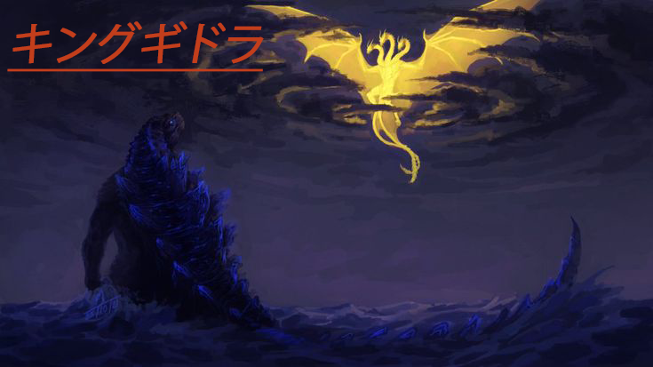

"宇宙から来た王様"

Where did ghidorah originate from
King Ghidorah originated as an ancient extraterrestrial three-headed dragon from outer space. Across different Godzilla eras, his backstory shifted: he was introduced as an alien world-destroyer, a mutated pet from the future, and an ancient alpha rival to Godzilla
Shōwa Era (1964–1972): Ghidorah debuted as a cosmic threat from the stars. He was responsible for the total destruction of the advanced Venusian civilization thousands of years ago before arriving on Earth to continue his rampage.
Heisei Era (1991): In Godzilla vs. King Ghidorah, his origin was rewritten. He was created by humans from the 23rd century using three genetically engineered, winged creatures known as Dorats. These creatures were exposed to radiation from a nuclear detonation in the past, merging and mutating them into the golden dragon.